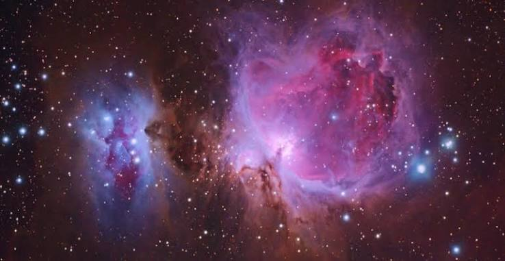
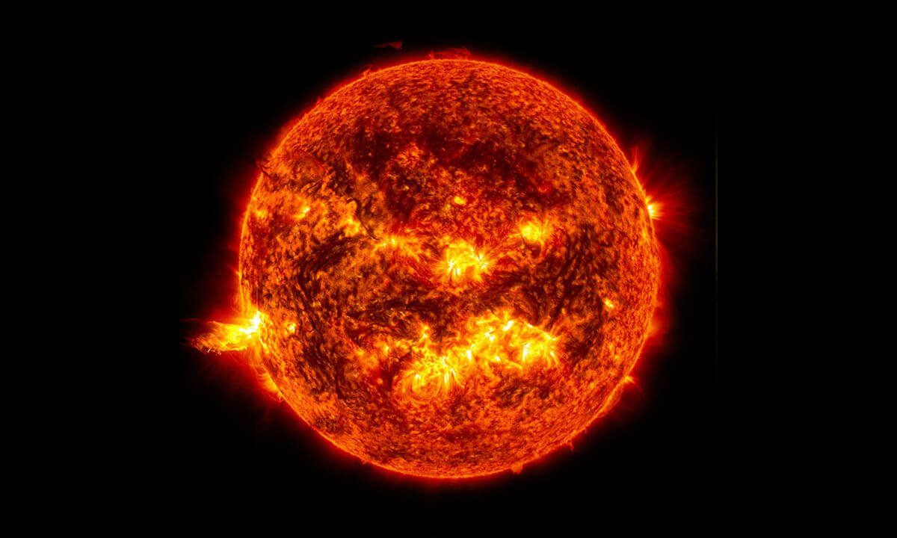
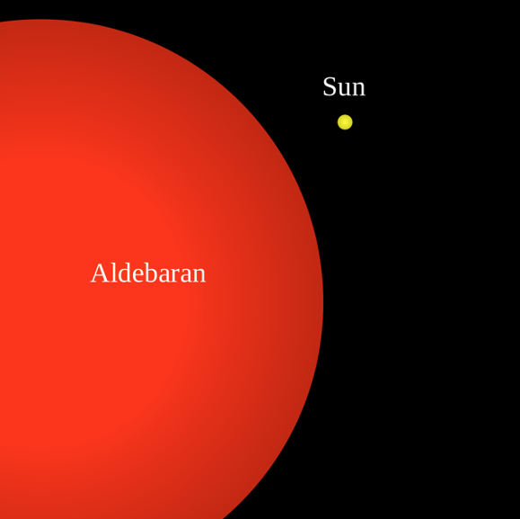
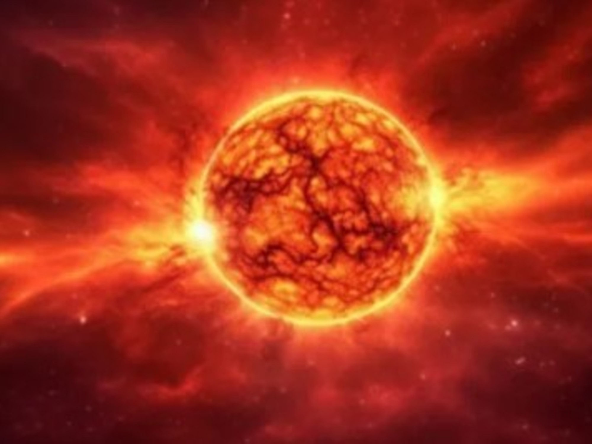
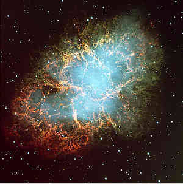
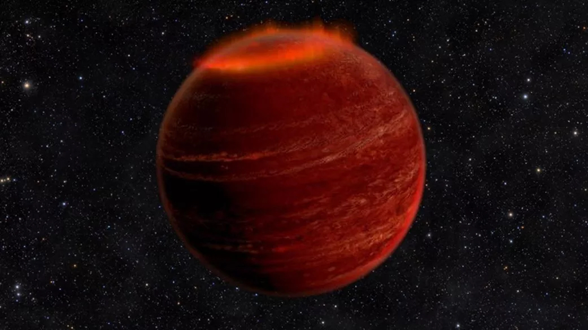
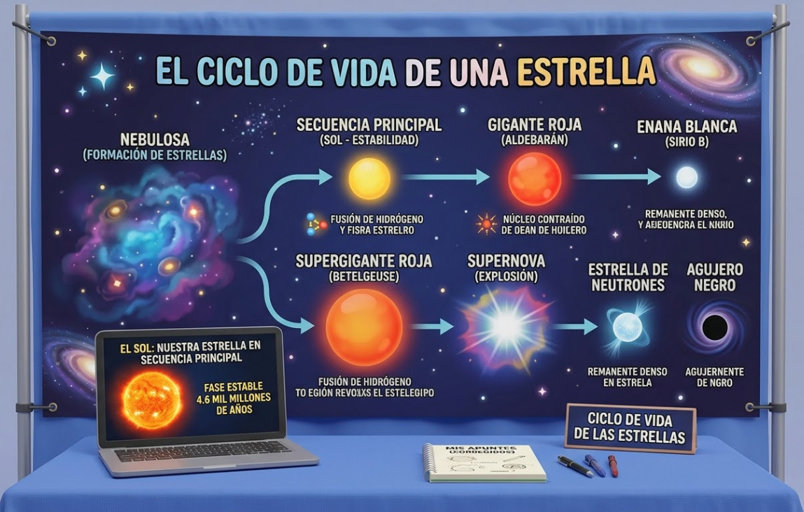

Introducción
El ciclo de vida estelar depende principalmente de su masa: las estrellas se forman en las nebulosas, pasan a la secuencia principal y eventualmente evolucionan hasta convertirse en una gigante roja, etapa que marca el inicio de su fase final.
Aquí encontrarás información sobre el ciclo de vida de una estrella, desde su formación y evolución hasta las últimas etapas de su existencia y su muerte.
Objetivos
Objetivo general
Explicar el ciclo de vida de una estrella, identificando sus etapas principales y los cambios que ocurren durante su evolución.
Objetivos específicos
- Relacionar los procesos físicos y químicos del universo con la evolución estelar, analizando la fusión nuclear y la formación de elementos.
- Utilizar herramientas matemáticas e informáticas para representar y analizar el ciclo estelar mediante gráficos, modelos y simulaciones que faciliten la comprensión de sus fases.
Marco teórico
1. Formación
Las estrellas se forman en nubes de gas y polvo llamadas nebulosas. La gravedad reúne el material, aumenta la presión y eleva la temperatura del núcleo hasta que pueden comenzar las reacciones de fusión nuclear.

2. Secuencia principal
Durante esta etapa, el hidrógeno del núcleo se transforma en helio mediante la fusión nuclear. La energía liberada permite que la estrella brille y mantenga un equilibrio frente a la gravedad.

3. Gigante o supergigante roja
Cuando el hidrógeno del núcleo comienza a agotarse, la estrella cambia su estructura y sus capas externas se expanden. Las estrellas de menor masa pueden convertirse en gigantes rojas; las más masivas, en supergigantes rojas.


4. Muerte estelar
Las estrellas de baja o mediana masa expulsan sus capas exteriores y dejan una enana blanca. Las estrellas muy masivas pueden explotar como supernovas y dejar como remanente una estrella de neutrones o un agujero negro, según la masa de su núcleo.

Simulación interactiva del ciclo de vida de una estrella
Explora cómo puede cambiar la apariencia de una estrella a medida que avanza su evolución. Utiliza el control para modificar la edad representada y observa los cambios de tamaño y color del modelo 3D.
Estrella en evolución
Observa cómo cambia el modelo al mover el control.
Modelo educativo ilustrativo. El control representa una escala evolutiva simplificada, no una edad real en años ni un cálculo astrofísico exacto.
Importancia de la masa
¿Por qué importa la masa?
La masa inicial determina gran parte de la evolución de una estrella: influye en su temperatura, luminosidad, consumo de combustible y duración. También condiciona su destino final.
Estrellas masivas
Las estrellas masivas consumen su combustible a un ritmo elevado. Al final de su evolución pueden explotar como supernovas y formar estrellas de neutrones o agujeros negros.
Estrellas de masa baja o intermedia
Estas estrellas pueden expandirse hasta convertirse en gigantes rojas y expulsar sus capas externas. El núcleo restante se convierte en una enana blanca que se enfría lentamente.
Otros objetos: enanas marrones
Las enanas marrones no tienen suficiente masa para mantener la fusión de hidrógeno propia de las estrellas como el Sol.

Nuestro stand durante la presentación del proyecto final
En nuestro stand presentaremos recursos digitales y un experimento relacionado con el estudio de la luz de las estrellas.
| El experimento físico muestra |
|---|
| Construiremos un espectroscopio casero capaz de descomponer la luz en los colores que la componen. Al comparar distintas fuentes luminosas, podremos comprender cómo el análisis del espectro ayuda a los astrónomos a estudiar la composición química y las propiedades de las estrellas. |

Conclusión
Comprender el ciclo de vida de las estrellas permite conocer cómo nacen, evolucionan y mueren, así como la importancia de la masa en su destino. El espectroscopio permite acercarnos de manera práctica al análisis de la luz, una herramienta fundamental para investigar la composición y las propiedades de los astros.